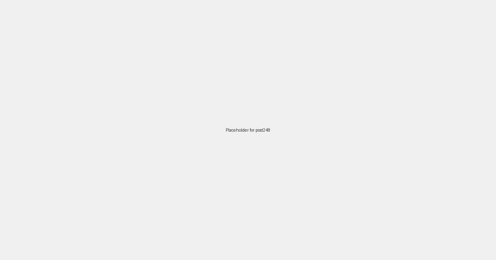

Local SEO for Doctors and Clinics: Diagnosing Your Local Search Presence in 2026

In 2026, when individuals need medical care, their first step is often to search online. For your medical practice, whether it's a family doctor, a specialist clinic, or an urgent care center, attracting new patients means being easily discoverable by local residents searching for "doctor near me," "pediatrician [your city]," or "urgent care [your neighborhood]." This is where a targeted Local SEO strategy helps you diagnose and heal your local search presence, ensuring your practice reaches those who need your care most.
Why Local SEO is Your Critical Rx for Medical Practices
Healthcare is a fundamentally local service. Patients prioritize convenience and trust in their local providers, making local search visibility paramount. Local SEO ensures your practice appears prominently when potential patients in your area are actively seeking medical attention, allowing you to:
- Attract New Patients: Be the first choice for "annual physical," "flu shot clinic," or "dermatologist near me."
- Showcase Your Specializations: Highlight your expertise in specific medical fields or treatments.
- Build Patient Trust: Emphasize your compassionate care, experienced medical staff, and state-of-the-art facilities.
- Outshine Competitors: Differentiate your practice through unique patient services, positive testimonials, or community involvement.
Essential Local SEO Strategies for Doctors & Clinics in 2026
1. Optimize Your Google Business Profile (GBP) for Patient Discovery
Your GBP is your digital front desk. Ensure it's meticulously detailed and optimized to guide local patients to your door:
- Accurate & Consistent NAP: Your Practice Name, Address, and Phone number must be perfectly uniform across all online listings.
- Categories: Select precise primary and secondary categories like "Physician," "Medical Clinic," "Family Doctor," "Specialty Clinic" (e.g., "Dermatologist," "Cardiologist"), or "Urgent Care Center."
- Detailed Services: List all your offerings, from general consultations and preventative care to specialized treatments, diagnostic services, and telehealth options.
- Hours of Operation: Keep these meticulously updated, especially for walk-in hours, extended evening clinics, or holiday schedules.
- High-Quality Photos & Videos: Showcase your welcoming waiting area, clean examination rooms, friendly staff, and any advanced medical equipment.
- GBP Posts: Announce new patient specials, seasonal health campaigns (e.g., "Flu Season Preparedness"), new services, or highlight patient success stories (with proper consent and HIPAA compliance).
- Encourage & Respond to Reviews: Patient reviews are crucial. Actively encourage satisfied patients to share their experiences, focusing on the quality of care, wait times, and staff professionalism. Respond thoughtfully and compliantly to all feedback, positive and negative.
- Action Links: Provide direct links for "Book an Appointment," "Call Now," "Patient Portal Login," or "Request a Prescription Refill."
2. Cultivate a Hyper-Local Keyword & Content Strategy for Every Ailment
Think about how local individuals search for medical care based on their symptoms, conditions, and location:
- "Doctor [city/neighborhood]"
- "Urgent care near [landmark]"
- "Pediatrician in [your city]"
- "Diabetes specialist [zip code]"
- "Physical therapy [suburb name]"
Integrate these keywords naturally into your website's service descriptions, condition-specific pages, FAQ sections (e.g., "Common Health Questions in [Your City]"), and blog content (e.g., "Managing Seasonal Allergies in [Your Region]").
Create dedicated landing pages for each major service or specialization you offer, optimizing them for relevant local search terms and providing valuable patient resources.
3. Build Local Citations and Healthcare Industry Backlinks
Secure citations (consistent mentions of your practice's NAP) from local business directories, healthcare-specific directories (e.g., Zocdoc, Healthgrades), local hospital directories, and community health resources. Seek backlinks from local pharmacies, physical therapists, community health organizations, and local wellness blogs. These connections boost your local search authority and establish your practice as a trusted pillar of the local healthcare community.
4. Mobile-First Website for Accessible Patient Information
Patients often search for medical information and contact clinics from their mobile devices, especially when feeling unwell or in an emergency. Ensure your website is:
- Fully Responsive: Flawless display on all devices.
- Fast-Loading: Crucial for users seeking urgent information or trying to book appointments.
- Easy to Navigate: Clear sections for services, doctors' profiles, patient resources, and prominent contact/appointment scheduling options.
- Online Appointment Booking: A streamlined, mobile-friendly system for scheduling appointments or requesting prescription refills is essential for patient convenience.
The LocalLeads Advantage for Doctors and Clinics
LocalLeads offers a powerful solution for doctors and clinics eager to attract more local patients. Our platform can generate hundreds of niche-specific, SEO-optimized pages tailored to various medical conditions, specializations, and specific local areas (e.g., "Family Doctor [City Name]", "Pediatrician [Neighborhood]", "Urgent Care [Suburb]"). This automated approach ensures your practice captures high-intent local search traffic without extensive manual effort, allowing you to focus on providing excellent patient care.
By implementing these Local SEO strategies, your medical practice can significantly enhance its online visibility, attract a steady stream of local patients, and solidify its position as the premier healthcare provider in your community in 2026 and beyond.